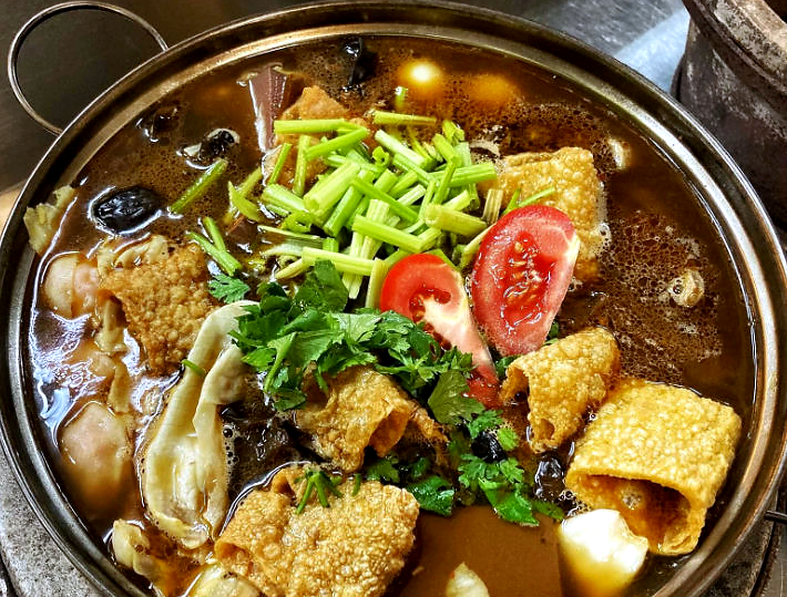
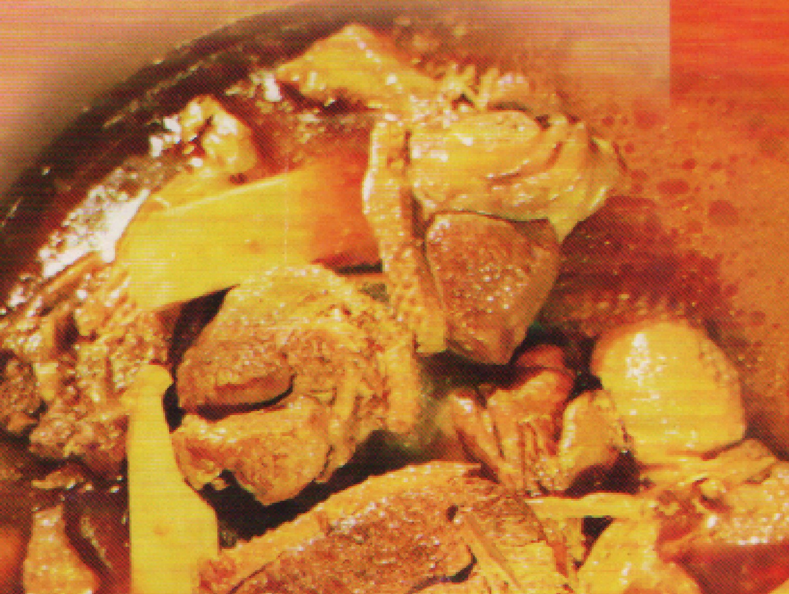
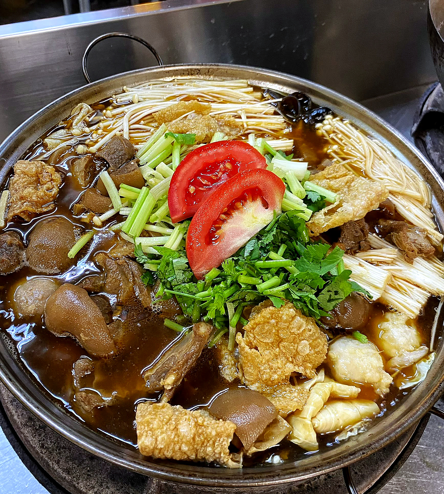
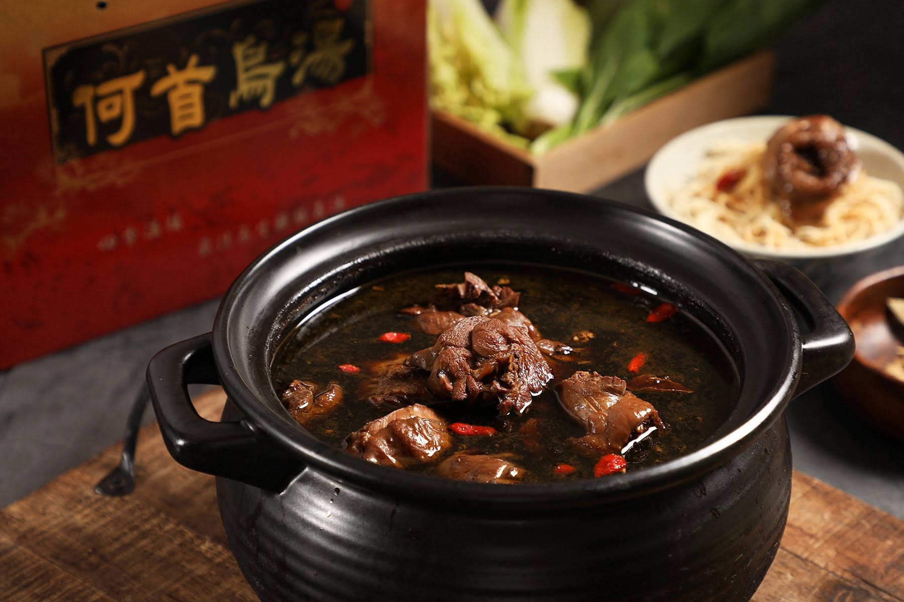

素材處理紀錄
東漢食補｜周家宇提案 ／ ASSET CLEAN-UP
01 品牌標記佔位規範（SVG 向量佔位）
門市版佔位
brand_mark_store.svg
朱紅雙框與鼎鍋線條佔位圖，用於東漢食補門市外盒、DM、名片與官網淺底版面；定稿後替換為正式 LOGO。
向量 SVG ／ 任意縮放

宅配版佔位
brand_mark_online.svg
同一枚圖形轉為淺金線條，專供東漢食補冷凍宅配墨黑底包裝與 DM 使用，維持品牌視覺一致性。
向量 SVG ／ 墨黑底專用

QR 佔位
qr_placeholder.svg
正式網址上線後，以 assets/make_qr.py 生成高容錯 QRcode 替換（540×540 px）。
向量佔位 ／ 上線後置換
02 產品主視覺
品項已校正：經店家確認，番茄＋蔥段＋深色湯這張為紅燒羊肉爐、玉米＋金針菇＋淺色湯這張為薑母鴨；兩張實拍的檔名歸屬已互換，設計稿引用的是校正後的檔案。

原檔
food_mutton.jpg
舊掃描稿，色偏橘、雜訊重，不適合放大印刷。
1767 × 1756 px

處理後
food_mutton_hd.jpg
門市實拍，裁除浮水印、溫和灰世界白平衡、去偏橘、對比與飽和微調、3 倍放大銳化。
2130 × 1617 px ／ A5 跨頁 300dpi 足夠

原檔
food_duck.jpg
舊稿偏低解析、整體偏橘，湯色不夠透亮。
1572 × 1185 px

處理後
food_duck_hd.jpg
門市實拍，裁除浮水印、溫和白平衡、去偏橘、對比與飽和微調、3 倍放大銳化。
1812 × 1596 px ／ 盒面 300dpi 足夠
03 新增素材（第三品項與特寫）

DM 封面
food_mutton_hero.jpg
由店家新提供的肉塊特寫調色後裁成橫幅，番茄、蔥段與肉塊都保留在畫面內。
1736 × 1126 px ／ DM 封面主視覺

來源
food_meat_closeup_hd.jpg
新提供的羊肉爐特寫原圖，裁浮水印、去偏橘、溫和對比與銳化後的完整直幅。
1736 × 1935 px

第三品項
food_herb_chicken_hd.jpg
何首烏雞湯，黑陶鍋、枸杞與紅棗，背景有「何首烏湯」招牌，畫質佳可直接用。
1800 × 1200 px ／ 外盒正面與 DM 小圖
素材與商業攝影建議
1. 目前示範食品圖為門市實拍去偏橘與 3 倍銳化處理版本，可作為提案與初期小量印刷視覺；若需大幅輸出（如 8 入外箱或大型海報），建議正式開案後安排棚拍或提供高畫素原始檔。
2. 若要強調肉塊份量與熱氣感，建議補拍「肉塊特寫」與「湯面蒸汽」兩種角度作為主視覺。
3. 正式網域上線後，可直接使用 assets/make_qr.py 一鍵生成高容錯官網 QRcode，放入名片、兩份 DM、宅配外盒與回店折抵券。